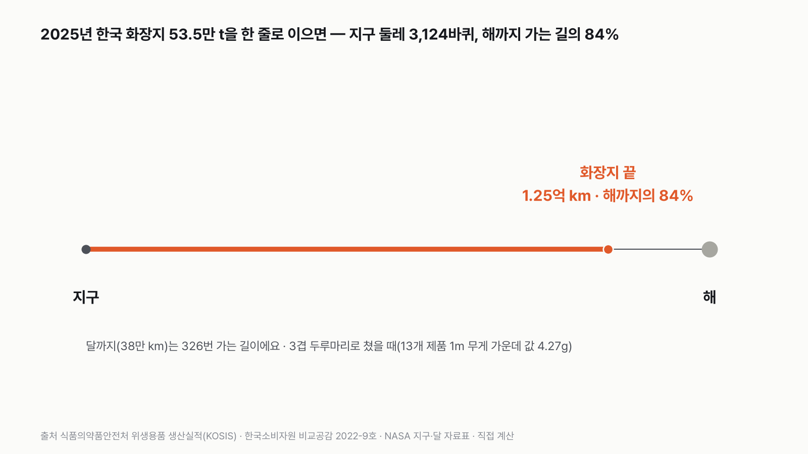
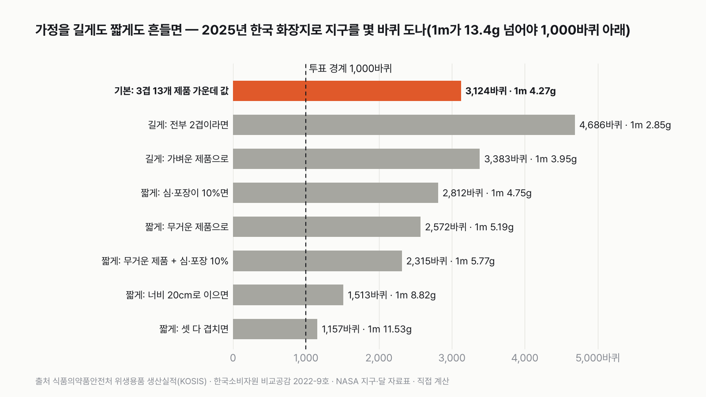
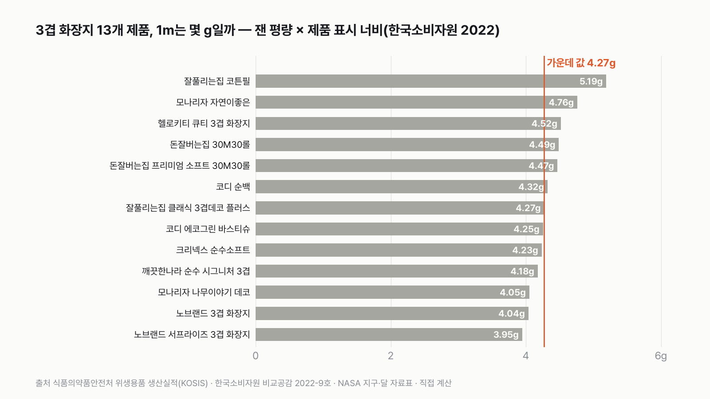
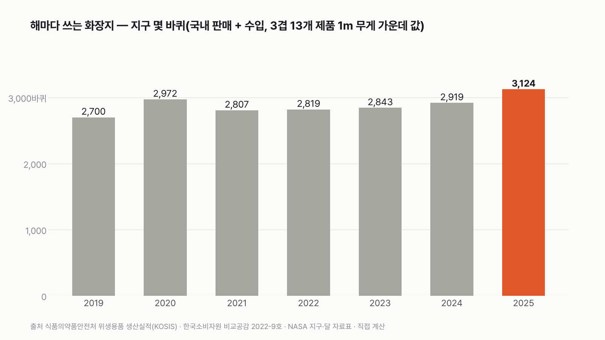

한국인이 1년에 쓰는 화장지를 이으면 지구 몇 바퀴일까
한 롤에 28m 안팎이에요. 그런 롤이 1년에 몇 개나 쓰일지 떠올려 보고 골라 주세요.
독자 투표
- 화장실에서 매일 쓰는 두루마리 화장지, 우리나라 사람 전부가 1년 동안 쓴 걸 한 줄로 이으면 얼마나 길까요?
- 식품의약품안전처가 해마다 집계하는 화장지 판매량(톤)과, 한국소비자원이 시중 제품 13개를 시험한 결과(무게와 너비)로 계산했어요.
- 지구 둘레는 4만 75km예요. 투표하면 결과가 바로 아래에 열려요.
조건과 규칙
- 화장지는 2025년 한 해 동안 국내에서 팔린 화장지 전부예요. 국내 회사가 판 양에 수입한 양을 더했어요. 키친타월과 종이냅킨은 따로 집계돼서 넣지 않았어요.
- 길이는 무게를 화장지 1m의 무게로 나눠서 구해요. 1m 무게는 시중 3겹 두루마리 13개 제품의 시험 결과로 구해요.
- 지구 둘레는 적도 한 바퀴, 4만 75km예요.
결과 요약
지구 둘레 3,124바퀴 → 1,000바퀴 넘게(가정을 가장 짧은 쪽으로 다 겹쳐도 1,157바퀴)
- 2025년 한국 화장지 53만 5천 t을 한 줄로 이으면 1억 2,500만 km예요. 지구를 3,124바퀴 감는 길이고, 지구에서 해까지 가는 길의 84%예요.
- 가정을 길게도 짧게도 흔들면 1,157바퀴부터 4,686바퀴까지예요. 1,000바퀴 아래로 내려가려면 화장지 1m가 13.4g을 넘어야 하는데, 시중 3겹 제품은 4~5g이에요.
- 한 사람으로 나누면 1년에 10.4kg, 2.4km예요. 28m 안팎 두루마리로 80~90롤, 1주에 1.6~1.7롤이에요.
그래서? 화장지 한 칸은 짧지만, 5,168만 명이 365일 쓰면 해까지 가는 길의 대부분을 덮어요.
독자 예상 vs 데이터 결과
한국인이 1년에 쓰는 화장지를 이으면 지구 몇 바퀴일까?
데이터로 보면 1,000바퀴 넘게. 지구 3,124바퀴예요. 가정을 가장 짧은 쪽으로 다 겹쳐도 1,157바퀴라 1,000바퀴를 넘어요.


숫자 두 개로 줄이면 이래요. 화장지 1m는 4.3g이에요. 그리고 우리나라에서 1년에 팔리는 화장지는 53만 5천 t이에요. 4.3g짜리 1m를 53만 5천 t 모으면 1억 2,500만 km가 돼요.
| 판 | 화장지 1m 무게 | 길이 | 지구 몇 바퀴 |
|---|---|---|---|
| 1판 기본(13개 제품 가운데 값) | 4.27g | 1억 2,521만 km | 3,124바퀴 |
| 2판 길게: 전부 2겹이라면 | 2.85g | 1억 8,781만 km | 4,686바퀴 |
| 2판 길게: 가벼운 제품으로 | 3.95g | 1억 3,556만 km | 3,383바퀴 |
| 2판 짧게: 심·포장이 무게의 10%면 | 4.75g | 1억 1,269만 km | 2,812바퀴 |
| 2판 짧게: 무거운 제품으로 | 5.19g | 1억 306만 km | 2,572바퀴 |
| 2판 짧게: 무거운 제품 + 심·포장 10% | 5.77g | 9,275만 km | 2,315바퀴 |
| 2판 짧게: 너비 20cm로 이으면 | 8.82g | 6,064만 km | 1,513바퀴 |
| 2판 짧게: 셋 다 겹치면 | 11.53g | 4,638만 km | 1,157바퀴 |
| 결론 | 1,000바퀴 넘게(1m가 13.4g을 넘어야 뒤집혀요) |
한 사람 기준(3판)은 1년에 10.4kg, 길이 2.4km, 두루마리 80~90롤이에요.
이 계산에서 측정한 값과 가정한 값은 분명히 나뉘어요. 화장지 판매량(톤), 13개 제품의 평량(1㎡의 무게), 지구 둘레는 잰 값이에요. 제품 너비와 롤 길이는 제품에 표시된 값이에요. 가정은 이것들이에요. 판매된 화장지 전부를 3겹 두루마리로 친다, 판매 톤이 모두 종이다(심·포장 무게 없음), 그리고 13개 제품이 시장 전체를 대표한다. 2판에서 이 가정들을 길게도 짧게도 흔들어 봤는데, 어느 쪽으로 흔들어도 판정은 같았어요. 1,000바퀴 아래로 내려가려면 화장지 1m가 13.4g을 넘어야 해요.
1판 기본: 3,124바퀴
2025년에 국내 회사가 판 화장지는 52만 9,420t, 수입한 화장지는 5,461t이에요. 더하면 53만 4,881t이에요. 한국소비자원 시험 결과로 구한 3겹 두루마리 13개 제품의 1m 무게 가운데 값은 4.27g이에요. 53만 4,881t을 4.27g으로 나누면 1억 2,521만 km예요. 지구 둘레 4만 75km로 나누면 3,124바퀴예요.
처음에는 수백 바퀴 정도를 생각했어요. 그런데 화장지는 생각보다 훨씬 가벼웠어요. 1m가 4g 남짓이라, 1t만 있어도 23만 m, 234km가 나와요. 그래서 53만 t은 지구 둘레를 3천 번 넘게 감고도 남아요. 계산해 놓고 저도 몇 번이나 단위를 다시 확인했어요.
이 길이는 지구에서 해까지(1억 4,960만 km) 가는 길의 84%예요. 달까지(38만 4,400km)라면 326번 갈 수 있는 길이에요.


2판 가정을 길게도 짧게도 흔들면: 1,157~4,686바퀴
화장지는 제품마다 두께와 너비가 달라요. 13개 제품의 1m 무게는 3.95g부터 5.19g까지예요. 우리나라 화장지 전부가 가장 무거운 제품이었다고 쳐도 2,572바퀴, 가장 가벼운 제품이었다고 쳐도 3,383바퀴예요.
길게 잡는 쪽으로는 2겹이 있어요. 2겹 화장지는 3겹보다 얇아서 같은 무게면 더 길어요. 전부 2겹이라고 치면 4,686바퀴예요.
짧게 잡는 쪽도 여럿 있어요. 판매 톤에 가운데 종이 심과 포장이 무게의 10% 들어 있다고 치면 2,812바퀴, 가장 무거운 제품과 겹치면 2,315바퀴예요. 미용티슈는 두루마리보다 넓어서, 너비 20cm로 한 줄을 이으면 1m가 무거워져요. 전부 그렇게 이으면 1,513바퀴, 세 가지를 다 겹치면 1,157바퀴예요. 공식 통계에서 화장실용과 미용 화장지를 나눌 수 없어서, 3겹 두루마리로 친 기본값이 실제보다 길지 짧을지는 알 수 없어요. 그래서 양쪽을 다 보여 드렸고, 어느 쪽이든 1,000바퀴를 넘었어요.


3판 한 사람: 1년에 2.4km, 두루마리 80~90롤
53만 4,881t을 2025년 인구 5,168만 명으로 나누면 한 사람이 1년에 10.4kg을 써요. 1m 4.27g으로 바꾸면 2.4km예요. 13개 제품 한 롤 길이의 가운데 값(27.6m)으로 나누면 88롤, 한 롤 무게의 가운데 값(125g)으로 나누면 83롤이에요. 80~90롤, 1주에 1.6~1.7롤이에요. 아기부터 어르신까지 모두 넣고, 집과 회사·공공 화장실에서 쓰는 걸 다 합친 값이에요.


해마다 조금씩 늘었어요
2019년에는 2,700바퀴였어요. 2025년에는 3,124바퀴로 16% 늘었어요. 그 사이 2020년에 2,972바퀴로 한 번 튀었어요. 코로나19가 시작된 해이기도 해요. 다만 해마다 판매량에는 재고와 출고 시점이 섞여 있어서, 한 해 차이를 사람들이 실제로 더 쓴 양으로 읽으면 안 돼요. 2025년에도 국내 판매(52만 9,420t)가 생산(51만 5,102t)보다 많았는데, 쌓아 둔 재고가 함께 팔린 것으로 보여요.
한 롤의 무게
13개 제품의 한 롤 무게는 108g부터 144g까지, 가운데 값은 125g이에요. 3겹 화장지 30롤 한 묶음이면 3.7kg 안팎이에요. 한 사람이 1년에 쓰는 10.4kg은 30롤 묶음 세 개에 조금 못 미쳐요.
결론은 하나예요. 한국인이 1년에 쓰는 화장지는 지구를 3,124바퀴 감아요. 가정을 가장 짧은 쪽으로 다 겹쳐도 1,157바퀴라, 1,000바퀴를 넘는다는 답은 흔들리지 않아요.
이 숫자는 어디서 왔나요
출처
기준일 화장지 판매량은 2025년 실적(2026년 11월 9일 받음)이에요. 조건은 2026년 11월 9일, 계산하기 전에 정했어요.
식품의약품안전처위생용품 생산실적
- 위생용품 품목유형별 판매(수출) 현황KOSIS DT_145014_023
화장지 국내판매량 2019~2025년(톤)
식품의약품안전처
- 위생용품 품목종류별 수입 현황KOSIS DT_145014_024
화장지 수입량(톤)
- 위생용품 품목유형별 생산 현황KOSIS DT_145014_022
화장지 생산량(참고)
한국소비자원
- 비교공감 제2022-9호 화장실용 화장지
3겹 13개 제품의 평량(시험으로 잰 값), 너비·롤 길이(제품 표시값)
미국항공우주국(NASA)
- Earth Fact Sheet, Moon Fact Sheet
지구 적도 반지름, 해까지·달까지 거리
통계청
- 장래인구추계KOSIS DT_1BPA001
2025년 인구
어떻게 셌나요
- 화장지 무게: 식품의약품안전처가 위생용품 관리법에 따라 해마다 받는 생산실적에서 '화장지'의 국내판매량을 썼어요. 국내 회사가 국내에 판 양이라 수출은 이미 빠져 있어요. 여기에 같은 통계의 수입량을 더했어요. 이 '화장지'에는 화장실용과 미용 화장지가 함께 들어 있고, 키친타월(일회용 타월)과 종이냅킨은 따로 잡혀서 빠져 있어요.
- 화장지 1m 무게: 한국소비자원이 2022년에 시중 3겹 두루마리 13개 제품을 시험한 결과에서, 제품마다 잰 평량(1㎡의 무게, 41.1~51.9g)과 제품에 표시된 너비(96~107mm)를 곱했어요. 예를 들어 평량 43.5g, 너비 96mm면 1m가 4.18g이에요.
- 3겹으로 친 이유: 화장실용과 미용 화장지가 공식 통계에서 나뉘지 않아서, 가장 흔한 3겹 두루마리로 쳤어요. 2겹은 더 길게, 넓은 미용티슈와 심·포장 무게는 더 짧게 만들어서, 기본값이 어느 쪽으로 기울지는 알 수 없어요. 2판에서 양쪽을 다 계산했어요.
- 지구 둘레: NASA 지구 자료표의 적도 반지름 6,378.137km로 둘레(2×원주율×반지름)를 구했어요. 4만 75km예요.
- 인구: 통계청 장래인구추계 2025년(중위) 5,168만 4,564명이에요.
한계 6가지
이 데이터로 말할 수 없는 것
- 판매량 톤에 가운데 종이 심과 포장 무게가 들어 있는지는 통계에 나와 있지 않아요. 10%라고 친 경우를 2판에 넣었어요.
- 화장지 1m 무게는 2022년에 잰 3겹 13개 제품이에요. 공공 화장실용 큰 롤이나 2겹 제품은 시험 대상이 아니었어요. 이런 제품은 대개 더 얇아서 길이가 더 길어져요.
- 2020년 수입량은 식약처 수입 상위 10개 품목에 화장지가 들지 않아 빠져 있어요(0으로 둠). 다른 해 수입량이 판매량의 1% 안팎이라 영향은 작아요.
- 국내 판매량이 생산량보다 많은 해가 있어요(재고). 이 글은 판매량을 썼어요.
- 너비 20cm 경우의 20cm는 미용티슈 한 장 크기를 어림한 가정이에요.
- 판매량은 사람들이 실제로 쓴 양이 아니라 팔린 양이에요. 집에 쌓아 둔 화장지도 들어가요.
다음 대결
대결 다 보기판다 vs 실험맨
판다 vs 실험맨, 다섯 판 승부로 하루에 '더 많이 먹는' 쪽은?
A판다vsB실험맨
투표하러 가기
대결실험맨투표했어요결과: 산다배달·외식비 vs 스마트폰
실험맨이 1년 동안 사 먹는 밥값(배달 포함)으로 최신 스마트폰을 살 수 있을까?
A산다vsB못 산다
투표하러 가기
대결실험맨투표했어요65세 이상 남성 승20대 여성 vs 65세 이상 남성
20대 여성 실험맨 vs 65세 이상 남성 실험맨, 네 판 승부로 하루 운동을 더 많이 하는 쪽은?
A20대 여성vsB65세 이상 남성
투표하러 가기
대결투표했어요짜장면 승짜장면 vs 치킨
짜장면 vs 치킨, 다섯 판 승부로 값이 더 많이 오른 국민 음식은?
A짜장면vsB치킨
투표하러 가기
대결실험맨투표했어요출퇴근 승출퇴근 vs 연차
실험맨이 1년 동안 출퇴근에 쓰는 시간과 연차 휴가로 쉬는 시간, 세 판 승부로 더 긴 쪽은?
A출퇴근vsB연차 휴가
투표하러 가기
대결투표했어요경복궁 승경복궁 vs 에버랜드
경복궁 vs 에버랜드, 다섯 판 승부로 1년에 사람이 더 많이 찾는 곳은?
A경복궁vsB에버랜드
투표하러 가기
대결투표했어요결과: 세계기록 사람마라톤 세계기록 vs 서울 버스
마라톤 세계기록 속도로 뛰는 사람 vs 서울 시내버스, 세 판 승부로 더 빠른 쪽은?
A세계기록 사람vsB서울 버스
투표하러 가기
대결실험맨투표했어요무승부실험맨 vs 수영장
실험맨 혼자 1년 쓴 수돗물로 25m 수영장 레인 한 줄을 채울 수 있을까?
A채운다vsB못 채운다
투표하러 가기
새 글 나오면 받아 보기
피드 리더 앱에 이 사이트 주소를 한 번 넣어 두면, 새 글이 올라올 때 앱에 떠요. 가입이나 메일 주소는 필요 없어요.
받는 법 보기
- 피드 리더 앱을 하나 골라요. 새 글을 모아 보여 주는 앱이에요. 예를 들면 Feedly나 Inoreader가 있어요. 둘 다 무료고 웹·휴대폰에서 써요.
- 앱에서 '구독 추가'(+)를 누르고 아래 주소를 붙여 넣어요.
- 끝이에요. 새 글이 올라오면 앱 목록에 떠요.
https://protofu.github.io/opendata-insight/feed.xmlFeedly를 쓴다면 여기를 눌러 바로 추가할 수도 있어요.